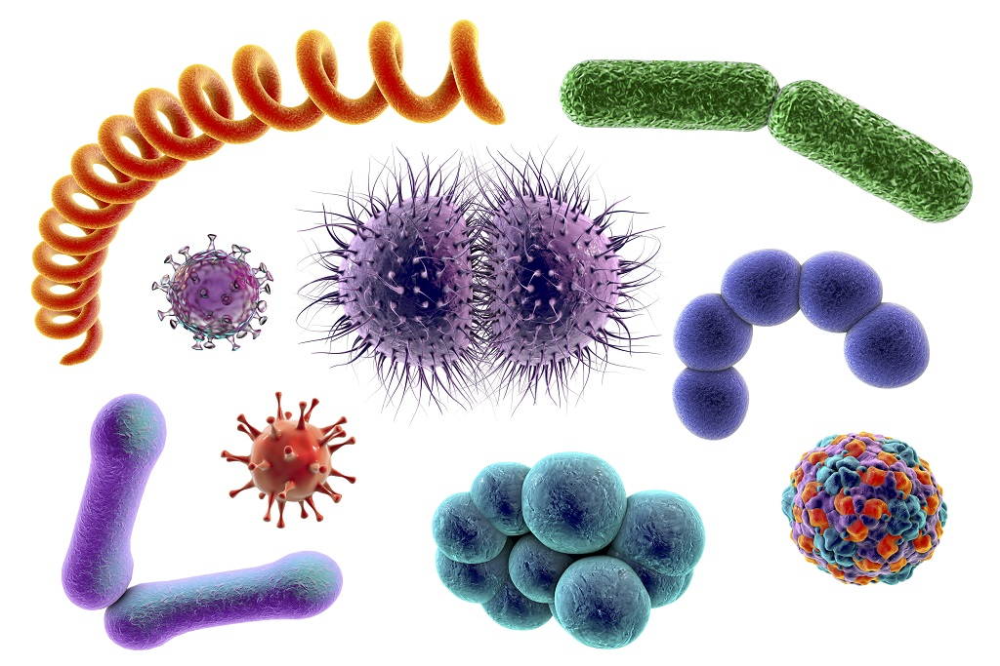
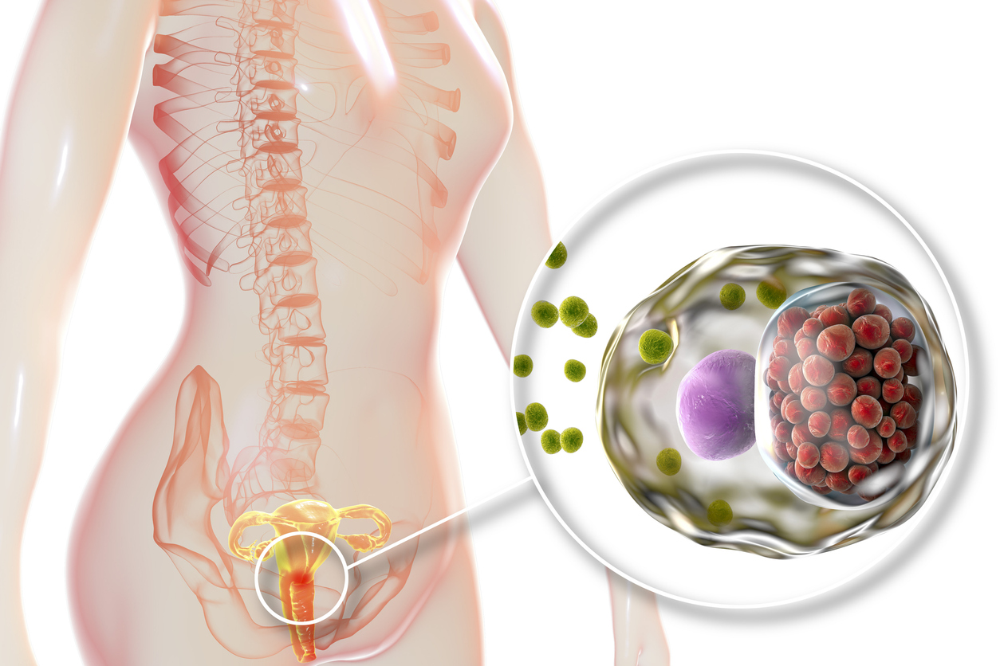
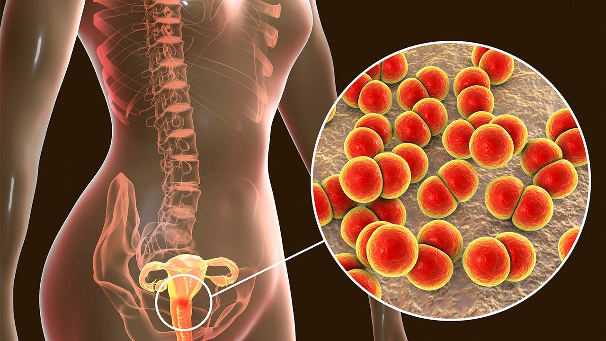
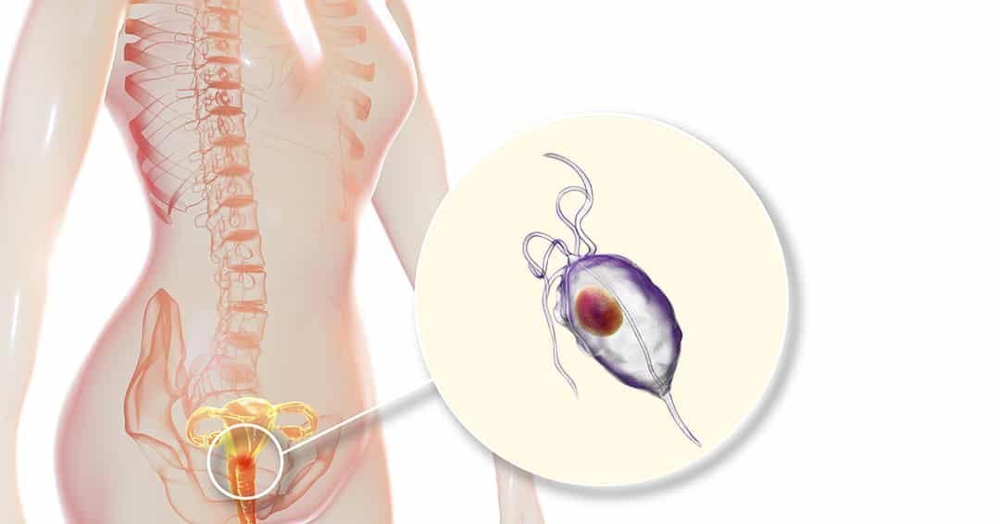
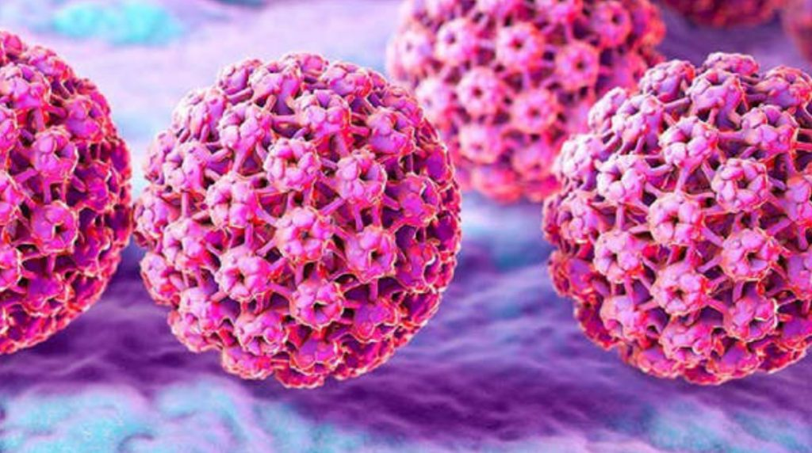

Infecciones de Transmisión Sexual
¿Qué son las Infecciones de Transmisión Sexual?
Conocidos como "ITS" (Infecciones de Transmisión Sexual) o "ETS" (Enfermedades de Transmisión Sexual), es una afección que se transmite principalmentea través del sexo vaginal, oral o anal y dependiendo del tipo específicos de infección también puede transmitirse a través. del contacto no sexual,
como al contacto físico o de fluidos como sangre, saliva o a través de la lactancia. Son causadas principalmente por bacterias, virus o parásitos.

Tipos de Enfermedades
Entre algunas de las más comunes son:Clamidia
Infección de transmisión sexual común que puede ser asintomática. Se puede transmitir por relaciones sexuales vaginales, anales u orales sin protección
ó de madre a hijo durante el embarazo, el parto o la lactancia.
Los síntomas de la clamidia incluyen dolor al orinar, secreción anormal, dolor durante las relaciones sexuales en las mujeres y sangrado anormal
en las mujeres. Puede provocar enfermedad inflamatoria pélvica e infertilidad en las mujeres.
Se puede tratar con antibióticos. Es posible que pueda tomar todos los antibióticos en un día, o durante una semana, según el tipo de medicamento que le receten.
Gonorrea
Por relaciones sexuales vaginales, anales u orales sin protección ó de madre a hijo durante el embarazo, el parto o la lactancia.
Puede causar dolor al orinar, dolor abdominal o pélvico, secreción similar al pus en los hombres y sangrado vaginal anormal.
Puede causar infección en el recto, ojos, garganta y articulaciones.
Se puede tratar con antibióticos. Su médico puede recomendarle que realice un seguimiento para realizar pruebas
para asegurarse de que la infección haya desaparecido por completo.
Tricomoniasis (Tric)
Por relaciones sexuales vaginales, anales u orales sin protección. Suele ir acompañada de un flujo vaginal maloliente, dolor al orinar,
relaciones sexuales dolorosas y enrojecimiento, ardor o picazón genital. Alrededor de 1 en 5 personas se re-infectan de tricomoniasis
entre los primeros 3 meses de tratamiento.
Por lo general, se puede tratar con una sola dosis de antibióticos. Si el resultado de la prueba de tricomoniasis es positivo,
tanto usted como su pareja deberán recibir tratamiento. Debe evitarse el coito hasta que se cure la infección.
Virus de Inmunodeficiencia Humana (VIH)
Se contrae a través de las relaciones sexuales anales o vaginales, o al compartir agujas, jeringas u otros implementos para la inyección de drogas.
Los síntomas del VIH en etapa 1 son muy parecidos a los de la gripe. Esto puede incluir fiebre, escalofríos, sarpullido, sudores nocturnos,
dolores musculares, dolor de garganta, fatiga, inflamación de los ganglios linfáticos y úlceras en la boca. Hay tres etapas del VIH:
infección aguda, infección crónica y SIDA.
Actualmente no existe cura para el VIH, pero con la atención médica adecuada, se puede evitar que la enfermedad progrese.
Herpes Genital

Se contrae por relaciones sexuales vaginales, anales u orales sin protección ó de madre a hijo durante el embarazo, el parto o la lactancia.
Es una infección de transmisión sexual frecuente caracterizada por dolor y llagas en los genitales.
Los síntomas incluyen dolor, picazón, protuberancias, ampollas, úlceras y costras en el área infectada.
Se puede contagiar tocando una llaga y luego frotando o rascando otra área del cuerpo.
No existe cura para el herpes genital. Su médico puede recetarle medicamentos antivirales para controlar los síntomas durante un brote.
Papillomavirus Humano (VPH)
Se contrae por relaciones sexuales vaginales, anales u orales sin protección ó de madre a hijo durante el embarazo, el parto o la lactancia.
La mayoría de las personas con VPH no presentan signos de problemas de salud. A veces, el VPH puede causar verrugas genitales y en varias
partes del cuerpo según la cepa y cáncer. Es tan común que casi todos los hombres y mujeres sexualmente activos contraen el virus en algún momento de sus vidas.
No existe cura para el virus, pero las verrugas se pueden tratar a medida que reaparecen con el tiempo y algunos tipos pueden prevenirse con una vacuna.
Sífilis
Se puede transmitir por relaciones sexuales vaginales, anales u orales sin protección, de madre a hijo durante el embarazo, el parto o la lactancia
ó por elementos en contacto con sangre (agujas sucias o sangre sin analizar). Puede causar llagas, erupciones cutáneas, fiebre,
inflamación de los ganglios linfáticos, dolor de garganta, pérdida de cabello en parches, dolores de cabeza, pérdida de peso, dolores musculares y fatiga.
Típicamente sigue una progresión de etapas que pueden durar semanas, meses o incluso años.
La sífilis primaria y secundaria generalmente se puede tratar con penicilina. Hay alternativas disponibles para quienes son alérgicos a la penicilina.
La mejor forma de evitar contraer una es realizar la abstinencia y tener cuidado con ciertos utensilios como agujas
y aquellos que son sexualmente activos, deben realizar tácticas de prevención, tener una relación monógama, reducir el número de parejas sexuales,
recibir ciertas vacunas, usar condones de látex y realizar chequeos médicos con frecuencia.